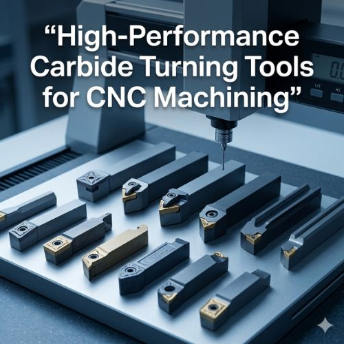

In CNC machining, turning is one of the most common metal cutting operations — a cutting tool removes material from a rotating workpiece to create precise cylindrical shapes. Carbide turning tools, manufactured using tungsten carbide, maintain sharp cutting edges even under high temperatures and heavy loads, unlike traditional high-speed steel tools. Their exceptional hardness, heat resistance, and wear resistance make them the preferred choice in modern CNC machining operations where productivity, reliability, and tool longevity are essential.
Carbide tools can cut through tough metals such as stainless steel, alloy steel, and cast iron with ease, while resisting the intense heat generated during high-speed machining without losing structural stability.
Precision manufacturing demands extremely tight tolerances and consistent surface finishes. Carbide turning tools deliver highly accurate dimensions with minimal vibration or deflection during cutting. Their rigid structure improves surface finish quality on shafts, bushings, valves, and precision mechanical parts. For high-speed machining, carbide tools allow deeper cuts and higher feed rates — removing more material in less time — while longer tool life reduces tooling costs and minimizes production interruptions.
Carbide turning tools serve the automotive industry for engine components, shafts, and transmission parts. In aerospace, they machine high-precision parts from tough materials like titanium and nickel alloys to strict safety standards. General engineering relies on them for gears, hydraulic components, and precision assemblies, while medical equipment manufacturing uses them to produce accurate surgical instruments and medical device components with flawless surface finishes.
Selecting the correct carbide turning tools requires evaluating the material being machined, required surface finish, CNC machine type, and operating conditions. Harder materials need tougher carbide grades; softer metals benefit from sharper cutting edges. Cutting speed, balanced feed rates, appropriate coolant usage, and matching tool geometry to material all directly influence performance and tool longevity. Working with a trusted manufacturer ensures that tools meet strict quality standards for reliable machining outcomes.
Attri Tech Machines Pvt. Ltd. is a global supplier and leading manufacturer exporter of carbide turning tools designed for high-performance CNC machining. With advanced manufacturing capabilities and strict quality control, the company produces tools that offer durability, consistent performance, and long tool life — trusted by manufacturers worldwide for precision-engineered tooling solutions that improve production efficiency and deliver reliable results across diverse industrial applications.
View Product Details at Attri Tech Machines